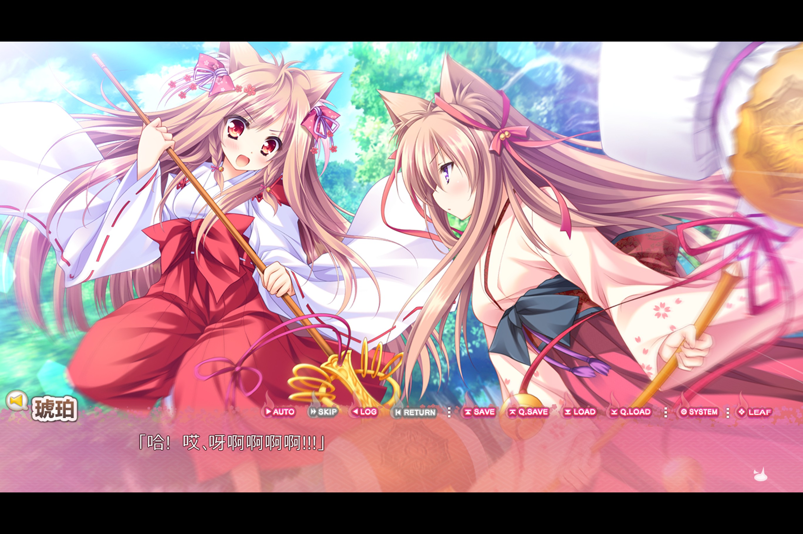
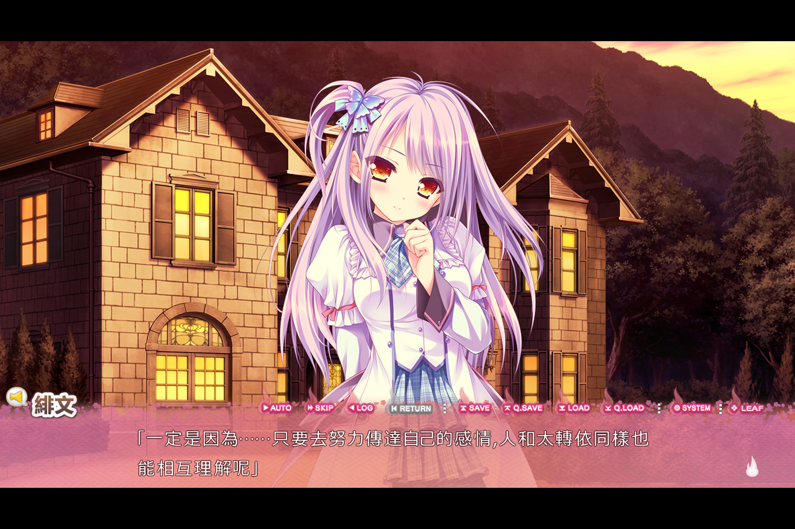
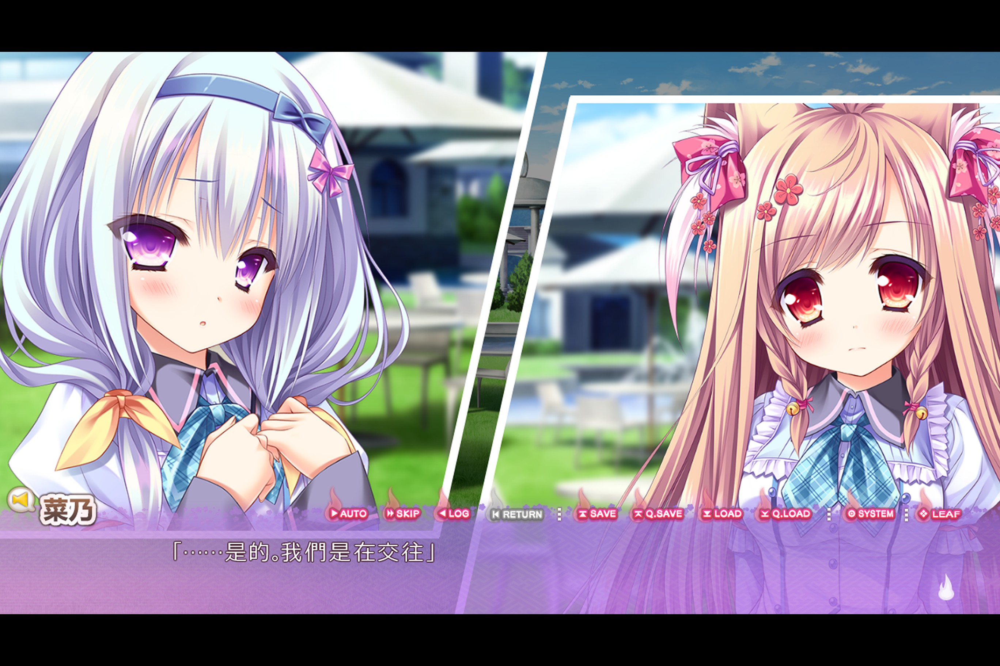

遊魂 2 -you're the only one-
タユタマ2 -you’re the only one-
- 中譯：遊魂 2 -you’re the only one-
- 遊戲 2016 年發行
- Steam 可購得中文版，補丁另售
- 遊魂 1 有動畫化。
雖然說是可以在沒看過一代 (Kiss on my Deity) 的狀況下玩，但實際上個人還是建議要補 1 代劇情，才會理解一些一代角色的行為與捏他，甚至本作部分劇情是以一代角色的觀點描述的。
劇情紀錄

開場，本作男主角空路過一處公園，遇到並調解完小朋友與太転依關的紛爭，旋即被路過的泉戶琥珀帶往八衢神社並求婚。雖空未接受此事，在其養母泉戶真白的好意下，原本是孤兒，住在福利院的空，搬入了八衢神社，與同學西條緋文與湯之花菜乃，開始了一系列日常生活。最後在結界干預事件後，由泉戶琥珀與一代男主：丈夫泉戶裕理聯手處理，故事暫告一段落。
接著根據前述共通線的選擇，進入好感度較高的女主個人線。分別解開了每一位女主的背景故事與設定。
琥珀與真白的鍛鍊
勇於承擔的緋文
與菜乃交往 (跟別人交往都會讓琥珀哭哭 😢 )
完成三位女主就會開啟真白線。在真白線中，大致上以真白、裕理與其他一代成員的視角來描述類似琥珀線的故事。
琥珀與家人。真白的眼睛在濾鏡下看起來像壞掉的樣子…
討論區很多人說少一張琥珀 CG ，按缺失位置敘述應該是這張，此 CG 於真白線回收。
真白線大致上回收了三個個人線的事件，發現真白私底下玩很大，最真白後將矢古民町傳承給琥珀後，便與裕理一同旅行，接回一代結局。
心得
在知道一代劇情的狀況下，我覺得二代的劇情開心很多，沿襲一代的主旨「人與太轉依和諧相處」，改以較歡樂日常的方式進行，在此設定下，若呈現與反派過於激烈的戰鬥衝突會很詭異，因此多半以文戲的方法來處理，像是緋文與菜乃個人線我覺得是滿意的；而琥珀線有較大展開，或許是沒跟到作者的想法，讓我覺得氣氛醞釀的有點不足。最後真白線統合了二代所有故事，並在最後回到了一代結局，為沒看過一代的玩家著想，我覺得相當的很用心。

偷窺的真白 (看啥不好說)
角色的立繪、CG、或是額外增補的內容非常的漂亮精緻，會動的獸耳娘也相當吸引我的的目光。音樂 BGM 個人感覺是中規中矩，選擇角色路線的部分，有書籤系統的輔助可以直接跳到指定的篇章去改選項，能省下一些系統快轉的時間。然過遊戲運行時間稍長，時而產生不明的錯誤提示，雖不影響遊戲進行或存檔，但是會使結束遊戲的選項失效，是稍微有點惱人的瑕疵。
整體而言，我覺得遊魂 2相當推薦給喜歡獸耳，劇情有日常但有小起伏作品的玩家。
評分
| 畫面 | 劇情 | 音樂 | 角色 | 整體 |
|---|---|---|---|---|
| 8 | 6 | 6 | 7 | 7 |
遊魂 2 的畫面我覺得相當的精緻，惟 Steam 版的程式時有 bug ，低機率會彈出錯誤視窗，雖不影響遊戲，但仍有點掃興。劇情綜觀整體，是完善了 1 代尾聲，以最後的真白線來看，或許大基調是傳承，但實際上表現力薄弱，很可惜。音樂 BGM 感覺使用上還行，但沒有讓我覺得很有突出特色的部分，因此僅給了及格評價。整體算中間偏上作，不同於一代，本作較休閒向。